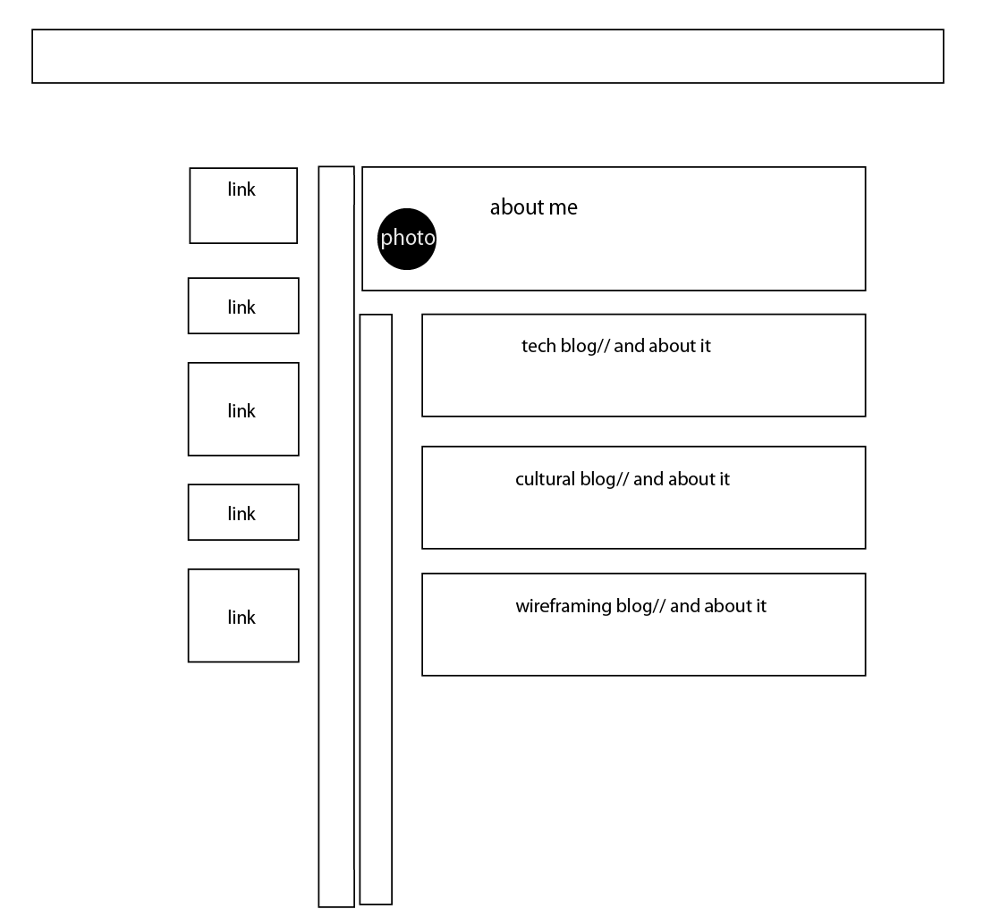
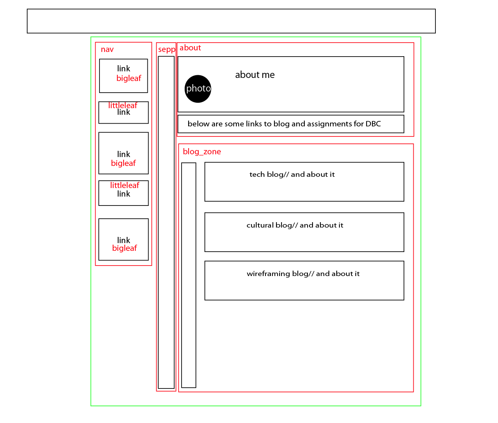

Here is the wire frame that I created prior to creating my index page. I challenged myself with the design, because I did want to make it into a tree, with branches and leaves. What do you think?

I then elaborated a bit more on planning of the page. I tried not to go div crazy, but I had felt most were necessary to arrange the page how I wanted. I used a lot of percentages and em's in hopes that it would help with accessibility and different browsers and devices.
June 12, 2014